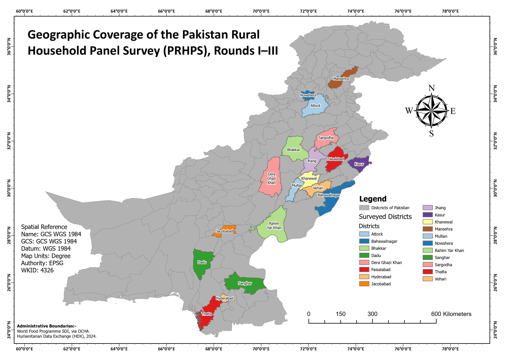

Cartography
Pakistan household survey coverage
A reader of household survey results needs to know where the underlying observations came from. I made this map to show the district coverage of rounds I to III of the Pakistan Rural Household Panel Survey, or PRHPS, in the context of Pakistan as a whole.
- Coverage
- Pakistan
- Survey rounds
- I to III
- Geographic unit
- District
District coverage for rounds I to III


Coloured districts show the coverage of rounds I to III against the national district network. Their colours identify names and do not rank sample size or survey outcomes.
Inspect details: District coverage for rounds I to IIITurning a district list into a geographic view
I highlighted the surveyed districts against a grey national boundary layer and added direct labels. The colours distinguish district names, while the quieter surrounding boundaries let a reader see how the selected areas are distributed.
The administrative boundaries are credited to World Food Programme data shared through OCHA's Humanitarian Data Exchange in 2024. I kept the map at district scale, with no household locations displayed.
How it could accompany survey results
Beside a report or presentation, the map could help a reader locate an unfamiliar district and understand which parts of the country are represented in the displayed coverage. The groups in Punjab and Sindh are much easier to recognize on the map than in a list of names.
Coverage does not describe the number of sampled households, survey outcomes or statistical representativeness. Those need to be read from the survey documentation; the map supplies the geographic context.
Data and references
- Pakistan Rural Household Panel Survey, rounds I to III
- World Food Programme SDI administrative boundaries via OCHA Humanitarian Data Exchange, 2024